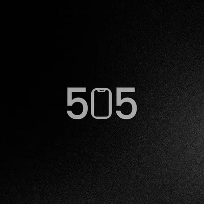

DEPARTAMENTO DE INVESTIGACIONES · INTERROGATORIO
La miniserie de suspenso dramático “505” reconstruye la muerte por sobredosis de la universitaria Valeria Ríos a partir de los testimonios contradictorios de sus amigos Lucas y Mario durante un interrogatorio policial en el presente.
A través de constantes regresos al pasado, la historia desentraña las complejas dinámicas del trío, incluyendo los sentimientos ocultos de Lucas y el difícil historial de Valeria con el consumo de estupefacientes, dejando al descubierto omisiones e inconsistencias en las versiones de ambos sospechosos.
Más que enfocarse en hallar un culpable directo, la narrativa fragmentada de la serie utiliza este constante juego entre la verdad y la percepción para explorar la fragilidad de la memoria, el peso de la culpa y el misterio de por qué ninguno de los sobrevivientes puede contar la misma historia sobre lo que realmente ocurrió esa noche.
Toca los fragmentos oscurecidos para revelar la declaración completa.
EXPEDIENTE DE PERSONAL
Nombre Apellido
Productor Ejecutivo
ID · 505-01
Nombre Apellido
Directora
ID · 505-02
Nombre Apellido
Guionista
ID · 505-03
Nombre Apellido
Productor de Línea
ID · 505-04
CINTAS DE EVIDENCIA